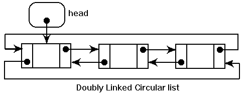

Vector
Vectors are sequence containers representing arrays that can change in size.
I implemented double linked list,with always available pointer to first and last element,it will reduce avarage time for finding apropriate element.

In the bigger quantity of operation my implementation shows 34% transcendence in efficiency
It is an algorithm which I used to get an execution time:
double PCFreq = 0.0; __int64 CounterStart = 0; void StartCounter() { LARGE_INTEGER li; if(!QueryPerformanceFrequency(&li)) cout << "QueryPerformanceFrequency failed!\n"; PCFreq = double(li.QuadPart)/1000000.0; QueryPerformanceCounter(&li); CounterStart = li.QuadPart; } double GetCounter() { LARGE_INTEGER li; QueryPerformanceCounter(&li); return double(li.QuadPart-CounterStart)/PCFreq; }
My implementation of Vector:
#include <iostream> #include <windows.h> #include <iomanip> using namespace std; double PCFreq = 0.0; __int64 CounterStart = 0; void StartCounter() { LARGE_INTEGER li; if(!QueryPerformanceFrequency(&li)) cout << "QueryPerformanceFrequency failed!\n"; PCFreq = double(li.QuadPart)/1000000.0; QueryPerformanceCounter(&li); CounterStart = li.QuadPart; } double GetCounter() { LARGE_INTEGER li; QueryPerformanceCounter(&li); return double(li.QuadPart-CounterStart)/PCFreq; } int *start=new int[50]; int currentSize=50; int position=0; void add(int value){ if( position < currentSize ){ start[position] = value; position++; } else{ currentSize+=50; int *tmp=start; start=new int[currentSize]; for(int x=0 ; x < currentSize ; x++){ start[x]=tmp[x]; } start[position]=value; position++; } } void display(){ for(int x=0; x < position; x++){ cout<<start[x]<<endl; } } void del(int positionToDel){ while(positionToDel!=position){ int tmp=start[positionToDel]; start[positionToDel]=start[positionToDel+1]; start[positionToDel+1]=tmp; positionToDel++; } position--; } int main(){ StartCounter(); for(int x=0;x<100;x++){ add(x); } for(int x=0;x<10;x++){ del(x+2); } del(1); del(1); cout<<setprecision(3)<<GetCounter()<<endl; return 0; }